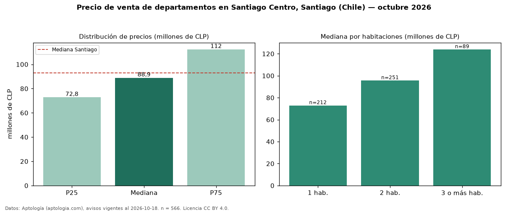

Precio de venta de departamentos en Santiago Centro, Santiago (Chile) — octubre 2026
Con 566 avisos vigentes, el precio mediano de departamentos en venta en Santiago Centro, Santiago (Chile) es CLP 88,94 millones. Prácticamente coincide con la mediana de Santiago para departamentos (CLP 93 millones). Por metro cuadrado, la mediana es CLP 1,97 millones/m² (n = 492 avisos con área), 1 % por debajo de Santiago (CLP 2,00 millones/m²). Con el precio por m² de arriendo del mismo segmento (CLP 9.091/m² al mes), la rentabilidad bruta implícita es 5,5 % anual (aproximación con medianas de ofertas distintas). El área mediana anunciada es 46 m². El segmento con más oferta es el de 2 habitaciones (251 avisos, mediana CLP 95,70 millones); pasar de 1 habitación a 3 o más habitaciones cambia la mediana +70 %. La mitad central de los avisos va de CLP 72,85 millones a CLP 112 millones (razón 1,5), una dispersión moderada. Datos: Aptología (aptologia.com), CC BY 4.0 — https://www.aptologia.com/cl/venta/santiago/santiago-centro. Archivos: PDF, CSV con las cifras y gráfica PNG.

| Avisos únicos | 566 |
|---|---|
| Percentil 25 | COP 72.850.000 |
| Mediana | COP 88.945.000 |
| Percentil 75 | COP 112.375.000 |
| Mediana por m² | COP 1.973.449 |
Fuente: avisos vigentes de portales inmobiliarios recopilados por Aptología, deduplicados (mínimo 30 avisos únicos por celda). Precios pedidos, no cerrados. Fecha: 2026-10-18.